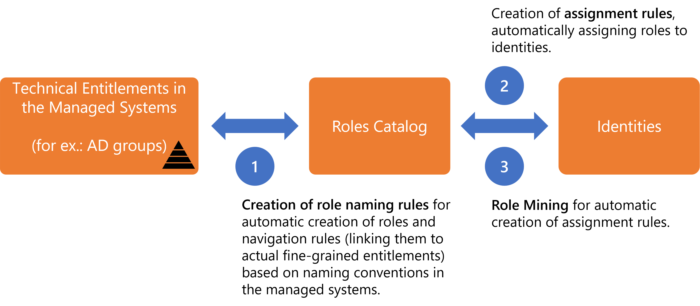
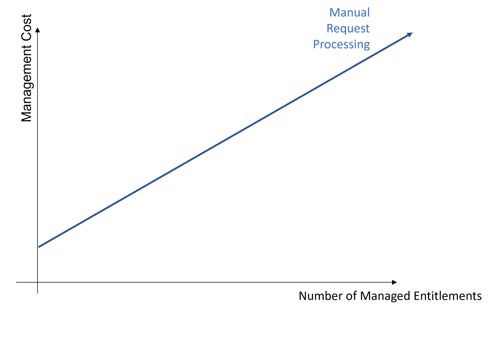
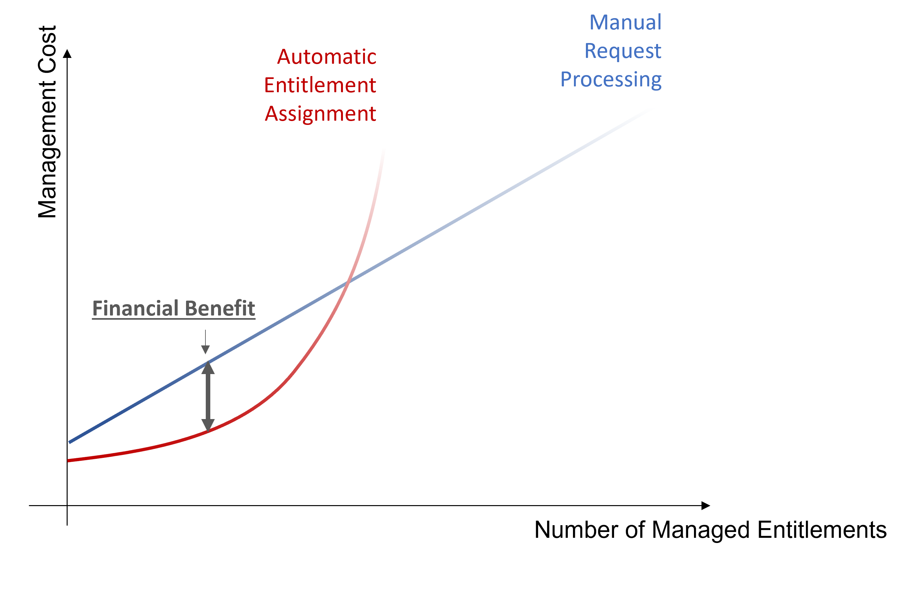
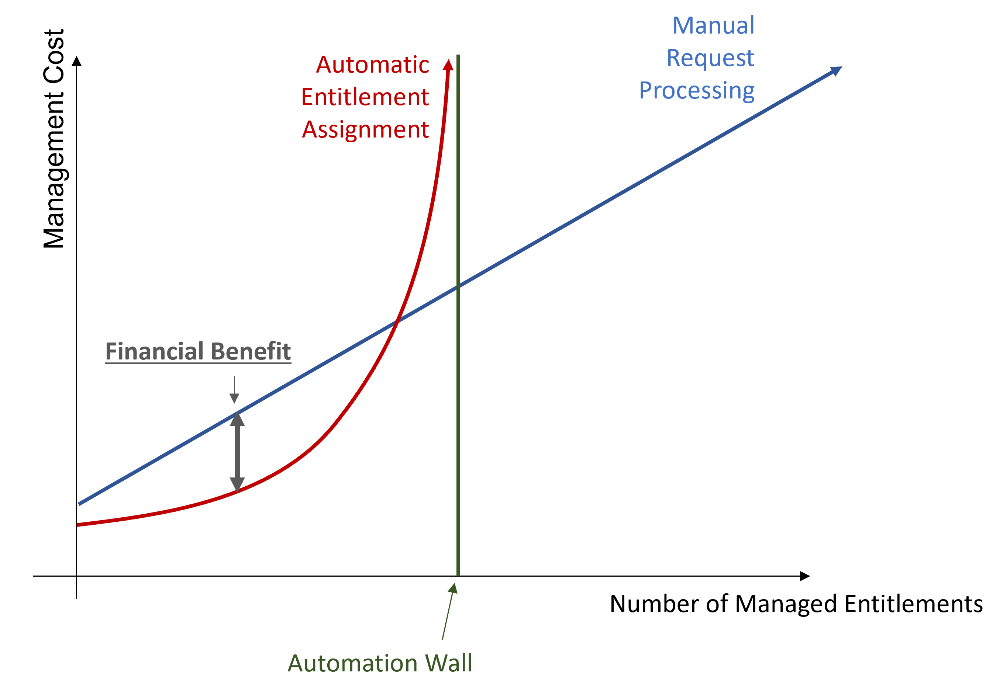
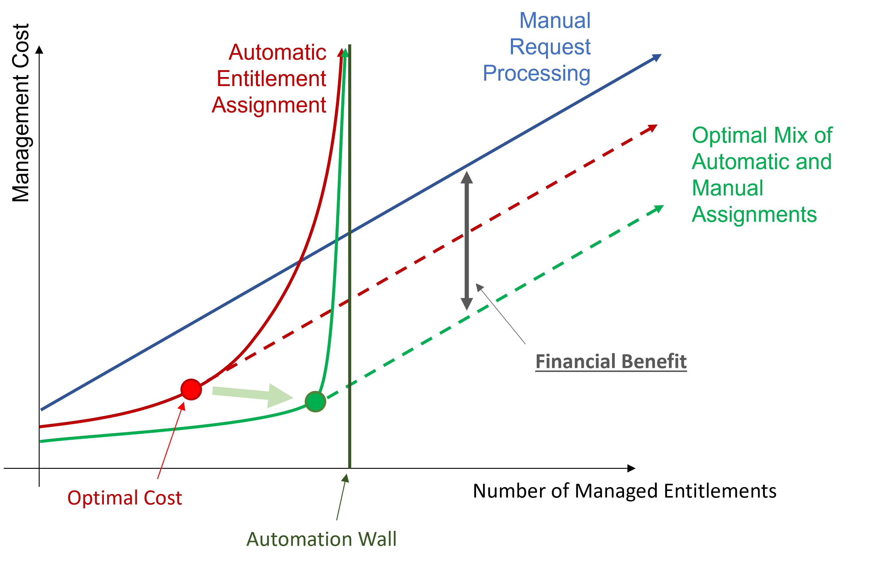
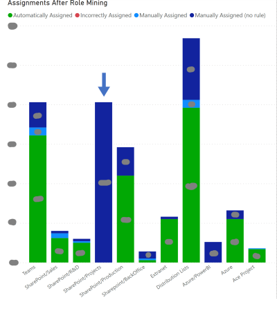
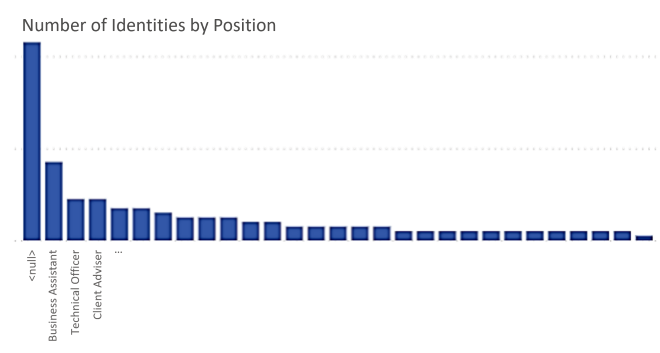
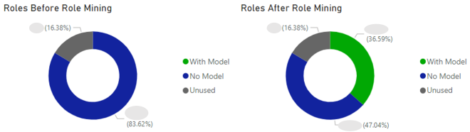
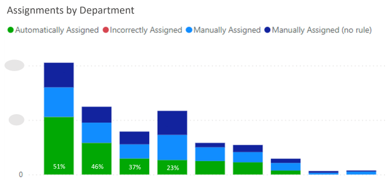
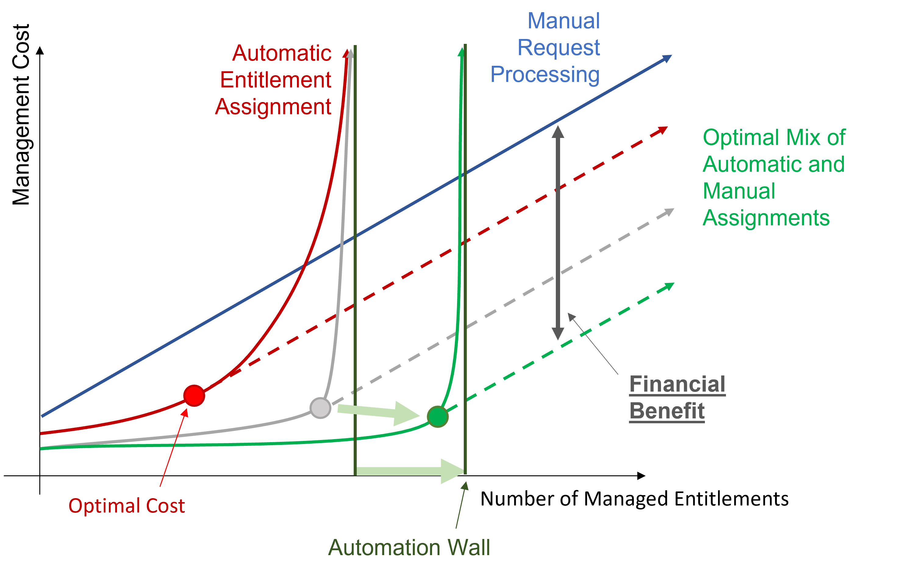

Automate Assignments
How to automate entitlement assignment.
Overview
Once you are able to assign manually the right entitlements to the right identities for the right reasons, you realize how tedious and error-prone entitlement assignment is, and you want to automate it.
The strategy for the automation of entitlement assignment lies in the automatic making of assignment decisions, based on several automation levels provided by Identity Manager:
- Automation of the creation of the role model, i.e. both roles and navigation rules that represent entitlements in the managed systems, through Create Roles in Bulk based on resources' naming conventions in the managed systems.
- Automation of entitlement assignment through assignment rules, which use identity criteria (called dimensions, like identities' department or work location, etc.) to decide what entitlements to assign automatically to identities. See the Conforming Assignments topic for additional information.
- Automation of the creation of said assignment rules through Perform Role Mining , based on existing data analysis.

Assignment rules can sometimes give to users an entitlement that they had already received manually. Hence, new assignment rules can imply redundancies between the entitlements assigned manually and approved, and those calculated by a rule and assigned automatically.
Netwrix Identity Manager (formerly Usercube) recommends Remove Redundant Assignments after any assignment rule is created or updated.
The main goal of automation is to reach the optimal cost, playing on assignment efficiency, quality and quantity.
Assessment of manual assignment
So far, Identity Manager's configuration has enabled users to use workflows to add and remove entitlements to/from identities. These assignments can be fulfilled manually or automatically, but the decision-making process that defines who gets what entitlement is still manual. Manual assignment poses the following risks:
- Delay can happen: on the day a worker joins an organization, they rely on a manual action to get all the entitlements required for them to start working. Even with roles aiming to help managers to understand actual entitlements, delay happens. See the Create Roles in the Role Catalog topic for additional information.Errors can happen: human mistakes are expected in role distribution, even though largely mitigated by the role review process and Perform Access Certification . See the Reconcile a Role topic for additional information.
- It is time-consuming.
The entitlement management cost mainly varies according to the number of managed entitlements. Manual processing for entitlement requests implies a linear growth of the management cost according to the number of managed entitlements.

Automation benefits
There is a high potential gain coming with the automation of assignment decisions:
- Machine Learning masters the error rate, as it is used as a parameter for Role Mining, i.e. masters false positive assignments (entitlements assigned to a user while they ought not to) which constitute a security breach, and false negative assignments (entitlements not assigned to a user who needs it) which are functionnaly blocking;
- Machine Learning achieves lower error rates than people;
- Machine Learning can compute the role model way faster than a person. Consequently, the model can be computed more frequently and thus sticks closer to reality.

Automation helps integrators find basic assignment rules and face the previous risks, thus reducing cost.
Automation precautions
Assignments do not have to be automated all at once.
On the one hand, before being automatically assigned, entitlements can be merely suggested by Identity Manager and assigned manually.
On the other hand, a distinction can be made between assignments according to their sensitivity, for example using different error rates, or using simulation, or automating the assignment of basic entitlements while suggesting sensitive entitlements, etc.
This way, security can be improved for example by making certification target only the sensitive entitlements that cannot be processed by Machine Learning. There is no need anymore to certify automatic assignments.
Plus, you can also use attributes as additional precautions, such as a grace period during which, after the application of a rule revoking a resource/entitlement, managers can decide for each user individually whether they need to keep said entitlement.
In a way, maturity with Machine Learning in IGA is much like a GPS: once we traveled using only paper maps, before the first navigation tools were commercialized. Then we learned how to use these tools, while keeping a map to be able to verify the GPS instructions. We found secure methods to navigate through all GPS evolutions, until we trusted GPS enough to guide us completely.
Automation limits
However, automation implies an increasing number of rules. And a high number of rules implies a certain complexity in rule model understanding, and consequently hiring expensive expert contractors to write the right rules. It drives up costs considerably and draws you near the automation wall.

The automation wall represents the automation threshold that cannot be overcome. It mostly comes from the fact that with limited data, automation capabilities are also limited. Everything cannot be automated.
Automation strategy
The idea is to stop automation when the automatic cost curve increases faster than the manual cost curve. The optimal profitability is represented on the chart and can be achieved via the optimal mix of automatic and manual assignments.

Automation strategy consists in using Machine Learning through Role Mining to get closer to the automation wall. And, as Role Mining doesn't enable overcoming said wall, the goal is to move the wall further away by improving data quality and quantity.
Participants and Artifacts
At this point, integrators should have all the elements they need to operate.
| Input | Output |
|---|---|
| Role Catalog (required) | Ideally automated role model |
See the Create Roles in the Role Catalog topic for additional information.
Automate Entitlement Assignment
The process of assignment automation is the following:
-
Perform Role Mining to approach the automation wall.
Role Mining covers more use cases than writing assignment rules manually. It diminishes the error rate and implies a lower execution cost. And thus, it brings the optimal cost closer to the automation wall.

Enlarge the number of managed entitlements by tolerating errors:
Automation reduces the error rate by avoiding human mistakes. Errors can still occur such as "false positives", i.e. users receiving inappropriate entitlements, thus creating security issues. However, experience shows that a slight error tolerance in Role Mining can highly benefit automation.
NETWRIX recommends trying Role Mining with 1% tolerated false positives, and 99.5% expected precision. Then adapt to your situation according to the reports.
For example, suppose an organization working with many distinct departments. If you see that the automation rate skyrockets when the error rate reaches the number of workers in one department, then it probably means that Identity Manager misses data concerning one of the departments. Thus the error rate allows Identity Manager to "ignore" one of the departments in the organization, and optimize automation. -
Generate Reports and analyze them with tools like Power BI to assess the automation wall and identify improvement areas.
For example in the following Power BI chart, automation is, on average, highly implemented except for
SharePoint Projects. This fact reveals a low level of awareness among the workers about their respective projects. This is a typical area for improvement in data quality.
For example, if charts show a high number of identities in the category
No Position, integrators understand that the data model must be completed for role mining to be efficient.
For example, if charts show a high number of unused roles, integrators understand that the role model needs further improvement because roles are not adequate.

For example, if charts show low automation rate per department, integrators will understand that many identities may have switched departments while keeping their previous entitlements.

-
Improve data quality and quantity to move the automation wall.
Whether automatic or manual, assignment decisions are based on existing data analysis. Data quantity and quality therefore define the position of the wall.
Improvement in existing data quantity and quality entails the possibility of managing a higher number of entitlements.

A high quantity of data simplifies data analysis and inferences in assignment rules.
A high quality of data also simplifies data analysis and enables better accuracy in assignment rules.
For example, contractors' data is often less familiar to HR departments. Efforts can be made in this direction to enhance automation.
Moreover, focus must be directed on actual and correct entitlements, using Identity Manager's Perform Access Certification .
Data reliability prevents integrators from easy extrapolation mistakes.
For example, consider the Netwrix Identity Manager (formerly Usercube) team in Marseilles mostly composed of R&D workers. If integrators miss information, they might inadvertently create a rule giving
R&Dgroup membership to all workers in Marseilles, while there are also workers from other departments. -
Repeat.